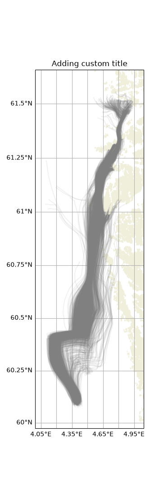
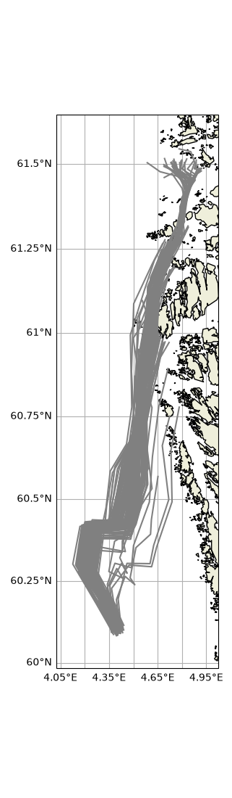
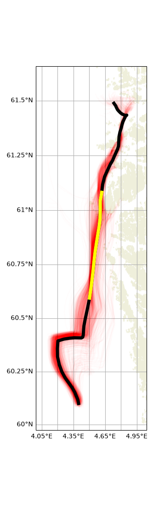

Note
Go to the end to download the full example code.
Trajan demo
From OpenDrift 2.0, analysis and plotting of results from OpenDrift simulations will be handled by a new, standalone package: Trajan https://github.com/OpenDrift/trajan
This example creates a test dataset, and demonstrates its anlysis using Trajan
Create test dataset with OpenDrift
o = OpenOil(loglevel=20)
# Add forcing
reader_arome = reader_netCDF_CF_generic.Reader(tdf +
'16Nov2015_NorKyst_z_surface/arome_subset_16Nov2015.nc')
reader_norkyst = reader_netCDF_CF_generic.Reader(tdf +
'16Nov2015_NorKyst_z_surface/norkyst800_subset_16Nov2015.nc')
o.add_reader([reader_norkyst, reader_arome])
# Seeding some particles
o.seed_elements(lon=4.4, lat=60.1, radius=1000, number=1000,
time=reader_arome.start_time)
# Running model
o.run(end_time=reader_norkyst.end_time, outfile='openoil.nc')
12:07:13 INFO opendrift:569: OpenDriftSimulation initialised (version 1.14.11 / v1.14.12-45-g2e494c3)
12:07:13 INFO opendrift.readers:67: Opening file with xr.open_dataset
12:07:13 INFO opendrift.readers.reader_netCDF_CF_generic:340: Detected dimensions: {'time': 'time', 'x': 'x', 'y': 'y'}
12:07:13 INFO opendrift.readers:67: Opening file with xr.open_dataset
12:07:14 INFO opendrift.readers.reader_netCDF_CF_generic:340: Detected dimensions: {'x': 'X', 'y': 'Y', 'z': 'depth', 'time': 'time'}
12:07:14 INFO opendrift.models.openoil.openoil:1720: Oil type not specified, using default: GENERIC BUNKER C
12:07:14 INFO opendrift.models.openoil.adios.dirjs:86: Querying ADIOS database for oil: GENERIC BUNKER C
12:07:14 INFO opendrift.models.openoil.openoil:1731: Using density 988.1 and viscosity 0.021692333877975332 of oiltype GENERIC BUNKER C
12:07:14 INFO opendrift.models.basemodel.environment:203: Adding a global landmask from GSHHG
12:07:20 INFO opendrift.models.basemodel.environment:227: Fallback values will be used for the following variables which have no readers:
12:07:20 INFO opendrift.models.basemodel.environment:230: sea_surface_height: 0.000000
12:07:20 INFO opendrift.models.basemodel.environment:230: upward_sea_water_velocity: 0.000000
12:07:20 INFO opendrift.models.basemodel.environment:230: sea_surface_wave_significant_height: 0.000000
12:07:20 INFO opendrift.models.basemodel.environment:230: sea_surface_wave_stokes_drift_x_velocity: 0.000000
12:07:20 INFO opendrift.models.basemodel.environment:230: sea_surface_wave_stokes_drift_y_velocity: 0.000000
12:07:20 INFO opendrift.models.basemodel.environment:230: sea_surface_wave_period_at_variance_spectral_density_maximum: 0.000000
12:07:20 INFO opendrift.models.basemodel.environment:230: sea_surface_wave_mean_period_from_variance_spectral_density_second_frequency_moment: 0.000000
12:07:20 INFO opendrift.models.basemodel.environment:230: sea_ice_area_fraction: 0.000000
12:07:20 INFO opendrift.models.basemodel.environment:230: sea_ice_x_velocity: 0.000000
12:07:20 INFO opendrift.models.basemodel.environment:230: sea_ice_y_velocity: 0.000000
12:07:20 INFO opendrift.models.basemodel.environment:230: sea_water_temperature: 10.000000
12:07:20 INFO opendrift.models.basemodel.environment:230: sea_water_salinity: 34.000000
12:07:20 INFO opendrift.models.basemodel.environment:230: sea_floor_depth_below_sea_level: 10000.000000
12:07:20 INFO opendrift.models.basemodel.environment:230: horizontal_diffusivity: 0.000000
12:07:20 INFO opendrift.models.basemodel.environment:230: ocean_vertical_diffusivity: 0.020000
12:07:20 INFO opendrift.models.basemodel.environment:230: ocean_mixed_layer_thickness: 50.000000
12:07:20 INFO opendrift:1910: Skipping environment variable upward_sea_water_velocity because of condition ['drift:vertical_advection', 'is', False]
12:07:20 INFO opendrift:1921: Storing previous values of element property lon because of condition (('general:coastline_action', 'in', ['stranding', 'previous']), 'or', ('general:seafloor_action', 'in', ['previous']))
12:07:20 INFO opendrift:1921: Storing previous values of element property lat because of condition (('general:coastline_action', 'in', ['stranding', 'previous']), 'or', ('general:seafloor_action', 'in', ['previous']))
12:07:20 INFO opendrift:958: Using existing reader for land_binary_mask to move elements to ocean
12:07:20 INFO opendrift:989: All points are in ocean
12:07:20 INFO opendrift.models.openoil.openoil:697: Oil-water surface tension is 0.035935 Nm
12:07:20 INFO opendrift.models.openoil.openoil:710: Max water fraction not available for GENERIC BUNKER C, using default
12:07:20 INFO opendrift:2237: 2015-11-16 00:00:00 - step 1 of 66 - 1000 active elements (0 deactivated)
12:07:20 INFO opendrift:2237: 2015-11-16 01:00:00 - step 2 of 66 - 1000 active elements (0 deactivated)
12:07:20 INFO opendrift:2237: 2015-11-16 02:00:00 - step 3 of 66 - 1000 active elements (0 deactivated)
12:07:20 INFO opendrift:2237: 2015-11-16 03:00:00 - step 4 of 66 - 1000 active elements (0 deactivated)
12:07:20 INFO opendrift:2237: 2015-11-16 04:00:00 - step 5 of 66 - 1000 active elements (0 deactivated)
12:07:21 INFO opendrift:2237: 2015-11-16 05:00:00 - step 6 of 66 - 1000 active elements (0 deactivated)
12:07:21 INFO opendrift:2237: 2015-11-16 06:00:00 - step 7 of 66 - 1000 active elements (0 deactivated)
12:07:21 INFO opendrift:2237: 2015-11-16 07:00:00 - step 8 of 66 - 1000 active elements (0 deactivated)
12:07:21 INFO opendrift:2237: 2015-11-16 08:00:00 - step 9 of 66 - 1000 active elements (0 deactivated)
12:07:21 INFO opendrift:2237: 2015-11-16 09:00:00 - step 10 of 66 - 1000 active elements (0 deactivated)
12:07:21 INFO opendrift:2237: 2015-11-16 10:00:00 - step 11 of 66 - 1000 active elements (0 deactivated)
12:07:21 INFO opendrift:2237: 2015-11-16 11:00:00 - step 12 of 66 - 1000 active elements (0 deactivated)
12:07:21 INFO opendrift:2237: 2015-11-16 12:00:00 - step 13 of 66 - 1000 active elements (0 deactivated)
12:07:22 INFO opendrift:2237: 2015-11-16 13:00:00 - step 14 of 66 - 1000 active elements (0 deactivated)
12:07:22 INFO opendrift:2237: 2015-11-16 14:00:00 - step 15 of 66 - 1000 active elements (0 deactivated)
12:07:22 INFO opendrift:2237: 2015-11-16 15:00:00 - step 16 of 66 - 1000 active elements (0 deactivated)
12:07:22 INFO opendrift:2237: 2015-11-16 16:00:00 - step 17 of 66 - 1000 active elements (0 deactivated)
12:07:22 INFO opendrift:2237: 2015-11-16 17:00:00 - step 18 of 66 - 1000 active elements (0 deactivated)
12:07:22 INFO opendrift:2237: 2015-11-16 18:00:00 - step 19 of 66 - 1000 active elements (0 deactivated)
12:07:22 INFO opendrift:2237: 2015-11-16 19:00:00 - step 20 of 66 - 1000 active elements (0 deactivated)
12:07:22 INFO opendrift:2237: 2015-11-16 20:00:00 - step 21 of 66 - 1000 active elements (0 deactivated)
12:07:23 INFO opendrift:2237: 2015-11-16 21:00:00 - step 22 of 66 - 1000 active elements (0 deactivated)
12:07:23 INFO opendrift:2237: 2015-11-16 22:00:00 - step 23 of 66 - 1000 active elements (0 deactivated)
12:07:23 INFO opendrift:2237: 2015-11-16 23:00:00 - step 24 of 66 - 1000 active elements (0 deactivated)
12:07:23 INFO opendrift:2237: 2015-11-17 00:00:00 - step 25 of 66 - 1000 active elements (0 deactivated)
12:07:23 INFO opendrift:2237: 2015-11-17 01:00:00 - step 26 of 66 - 1000 active elements (0 deactivated)
12:07:23 WARNING opendrift.readers.basereader.structured:324: Data block from /root/project/tests/test_data/16Nov2015_NorKyst_z_surface/norkyst800_subset_16Nov2015.nc not large enough to cover element positions within timestep. Buffer size (8) must be increased. See `Variables.set_buffer_size`.
12:07:23 INFO opendrift:2237: 2015-11-17 02:00:00 - step 27 of 66 - 1000 active elements (0 deactivated)
12:07:23 WARNING opendrift.readers.basereader.structured:324: Data block from /root/project/tests/test_data/16Nov2015_NorKyst_z_surface/arome_subset_16Nov2015.nc not large enough to cover element positions within timestep. Buffer size (4) must be increased. See `Variables.set_buffer_size`.
12:07:23 INFO opendrift:2237: 2015-11-17 03:00:00 - step 28 of 66 - 1000 active elements (0 deactivated)
12:07:23 INFO opendrift:2237: 2015-11-17 04:00:00 - step 29 of 66 - 999 active elements (1 deactivated)
12:07:24 INFO opendrift:2237: 2015-11-17 05:00:00 - step 30 of 66 - 999 active elements (1 deactivated)
12:07:24 INFO opendrift:2237: 2015-11-17 06:00:00 - step 31 of 66 - 996 active elements (4 deactivated)
12:07:24 INFO opendrift:2237: 2015-11-17 07:00:00 - step 32 of 66 - 995 active elements (5 deactivated)
12:07:24 INFO opendrift:2237: 2015-11-17 08:00:00 - step 33 of 66 - 983 active elements (17 deactivated)
12:07:24 INFO opendrift:2237: 2015-11-17 09:00:00 - step 34 of 66 - 959 active elements (41 deactivated)
12:07:24 INFO opendrift:2237: 2015-11-17 10:00:00 - step 35 of 66 - 914 active elements (86 deactivated)
12:07:24 INFO opendrift:2237: 2015-11-17 11:00:00 - step 36 of 66 - 872 active elements (128 deactivated)
12:07:25 INFO opendrift:2237: 2015-11-17 12:00:00 - step 37 of 66 - 830 active elements (170 deactivated)
12:07:25 INFO opendrift:2237: 2015-11-17 13:00:00 - step 38 of 66 - 800 active elements (200 deactivated)
12:07:25 INFO opendrift:2237: 2015-11-17 14:00:00 - step 39 of 66 - 771 active elements (229 deactivated)
12:07:25 INFO opendrift:2237: 2015-11-17 15:00:00 - step 40 of 66 - 737 active elements (263 deactivated)
12:07:25 INFO opendrift:2237: 2015-11-17 16:00:00 - step 41 of 66 - 677 active elements (323 deactivated)
12:07:25 INFO opendrift:2237: 2015-11-17 17:00:00 - step 42 of 66 - 618 active elements (382 deactivated)
12:07:26 INFO opendrift:2237: 2015-11-17 18:00:00 - step 43 of 66 - 565 active elements (435 deactivated)
12:07:26 INFO opendrift:2237: 2015-11-17 19:00:00 - step 44 of 66 - 503 active elements (497 deactivated)
12:07:26 INFO opendrift:2237: 2015-11-17 20:00:00 - step 45 of 66 - 415 active elements (585 deactivated)
12:07:26 INFO opendrift:2237: 2015-11-17 21:00:00 - step 46 of 66 - 330 active elements (670 deactivated)
12:07:26 INFO opendrift:2237: 2015-11-17 22:00:00 - step 47 of 66 - 298 active elements (702 deactivated)
12:07:26 INFO opendrift:2237: 2015-11-17 23:00:00 - step 48 of 66 - 271 active elements (729 deactivated)
12:07:26 INFO opendrift:2237: 2015-11-18 00:00:00 - step 49 of 66 - 261 active elements (739 deactivated)
12:07:26 INFO opendrift:2237: 2015-11-18 01:00:00 - step 50 of 66 - 254 active elements (746 deactivated)
12:07:26 INFO opendrift:2237: 2015-11-18 02:00:00 - step 51 of 66 - 250 active elements (750 deactivated)
12:07:27 INFO opendrift:2237: 2015-11-18 03:00:00 - step 52 of 66 - 247 active elements (753 deactivated)
12:07:27 INFO opendrift:2237: 2015-11-18 04:00:00 - step 53 of 66 - 243 active elements (757 deactivated)
12:07:27 INFO opendrift:2237: 2015-11-18 05:00:00 - step 54 of 66 - 242 active elements (758 deactivated)
12:07:27 INFO opendrift:2237: 2015-11-18 06:00:00 - step 55 of 66 - 230 active elements (770 deactivated)
12:07:27 INFO opendrift:2237: 2015-11-18 07:00:00 - step 56 of 66 - 219 active elements (781 deactivated)
12:07:27 INFO opendrift:2237: 2015-11-18 08:00:00 - step 57 of 66 - 218 active elements (782 deactivated)
12:07:27 INFO opendrift:2237: 2015-11-18 09:00:00 - step 58 of 66 - 215 active elements (785 deactivated)
12:07:27 INFO opendrift:2237: 2015-11-18 10:00:00 - step 59 of 66 - 215 active elements (785 deactivated)
12:07:27 INFO opendrift:2237: 2015-11-18 11:00:00 - step 60 of 66 - 215 active elements (785 deactivated)
12:07:27 INFO opendrift:2237: 2015-11-18 12:00:00 - step 61 of 66 - 215 active elements (785 deactivated)
12:07:27 INFO opendrift:2237: 2015-11-18 13:00:00 - step 62 of 66 - 213 active elements (787 deactivated)
12:07:28 INFO opendrift:2237: 2015-11-18 14:00:00 - step 63 of 66 - 212 active elements (788 deactivated)
12:07:28 INFO opendrift:2237: 2015-11-18 15:00:00 - step 64 of 66 - 211 active elements (789 deactivated)
12:07:28 INFO opendrift:2237: 2015-11-18 16:00:00 - step 65 of 66 - 211 active elements (789 deactivated)
12:07:28 INFO opendrift:2237: 2015-11-18 17:00:00 - step 66 of 66 - 211 active elements (789 deactivated)
Demonstrating analysis and visualisation of the output dataset, independently of OpenDrift code
if not os.path.exists('openoil.nc'):
raise ValueError('Please run create_test_dataset.py first')
Importing a trajectory dataset from a simulation with OpenDrift decode_coords is needed so that lon and lat are not interpreted as coordinate variables
d = xr.open_dataset('openoil.nc', decode_coords=False)
# Requirement that status>=0 is needed since non-valid points are not masked in OpenDrift output
d = d.where(d.status>=0) # only active particles
Displaying a basic plot of trajectories
d.traj.plot(land='mask')
ax = plt.gca()
ax.set_title('Adding custom title')
plt.show()

Demonstrating how the Xarray Dataset can be modified, allowing for more flexibility than can be provided through the plotting method of OpenDrift
Extracting only the first 100 elements, and every 4th output time steps:
dsub = d.isel(trajectory=range(0, 100), time=range(0, len(d.time), 4))
dsub.traj.plot(land='h')
plt.show()

With several plots on the same figure
d.traj.plot(color='red', alpha=0.01, land='mask') # Plotting individual trajectories in red
dmean = d.mean('trajectory', skipna=True) # Overlaying a "mean" trajectory in black
dmean.traj.plot(color='k', linewidth=5)
# Showing the a sub-period of the mean trajectory in yellow
dmean.sel(time=slice('2015-11-17', '2015-11-17 12')).traj.plot(color='yellow', linewidth=5)
plt.tight_layout()
plt.show()

Cleaning up
os.remove('openoil.nc')
Total running time of the script: (0 minutes 57.474 seconds)